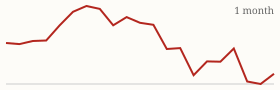

| Today's briefing for operators |
Top line: Off-market deals for under $1,000 each |
|
| Tuesday, October 27, 2026 | Late Edition | Curated from 63 voices on X |
|
Real Estate
Off-Market Deals for Under $1,000 Each
Cole Ruud-Johnson says AI bots now bring in a big share of his 20-plus leads a day.
By @coleruudjohnson |
Cole Ruud-Johnson says his cost per off-market deal is now under $1,000, with more than 20 leads coming in every day, and a lot of them are being found by AI bots his team built. He's offering the 10-plus bots for free to anyone who comments on the post. |
In a second post the same afternoon he added a useful caveat: he thinks AI is usually a distraction, but it's a cheat code for finding deals. The CEO lesson is to point AI at one measurable bottleneck, like lead flow or cost per deal, and track that number, instead of buying tools for their own sake. |
|
| Read on X |
|
Mortgage Rates & Markets | Mortgage Rates Today's average lender rates | 30-year fixed | 7.33% | +0.00 | | 15-year fixed | 6.99% | +0.01 |
Daily change vs. prior day. Source: Mortgage News Daily, as of 10/26/2026 (updated weekdays about 4 PM ET). |
|
S&P 500 Close of Mon, Oct 26 S&P 500 7,676.77 ▲ +53.09 (+0.70%) Yahoo Finance chart data (daily closes) |
|
Nasdaq Composite Close of Mon, Oct 26 Nasdaq Composite 26,169.38 ▲ +214.04 (+0.82%)  Yahoo Finance chart data (daily closes) |
|
| Real Estate & Deals | Sale record for the downtown Nashville condo. Image via @nickgerli1 on X Nashville Condo Sellers Take 28% Losses By @nickgerli1 Nick Gerli points to a downtown Nashville condo bought for $1.15 million in March 2024 that just sold for $825,000. Downtown inventory is 110% above normal and he expects more price cuts in 2027, so overbuilt condo markets are where the discounts are. Read on X |
The Four-Year Housing Stalemate By @Jacob_Naviaux Jacob Naviaux sums up the market with rates above 7%: owners won't give up 3% mortgages, sellers who list won't cut to where buyers are, and buyers won't pay top dollar because they fear declines. That stuck middle is exactly where motivated-seller deals come from. Read on X |
Buy for $3.7 Million, Leave With $150,000 By @PaceJordanMorby Pace Morby breaks down a deal funded by a $2.8 million bank loan plus $1.1 million in seller financing. The financing covered the price plus $200,000, so the buyer walked away from closing with $150,000 after costs. Read on X |
Normal Affordability Is 6+ Years Away By @BiggerPockets BiggerPockets says a return to historical affordability would take 4% rates, a 25% drop in prices, or 33% wage growth. Plan your business for this market rather than waiting for the old one to come back. Read on X |
| AI Briefing | OpenAI's GPT-6.1 Terra launch video. Image via @OpenAI on X OpenAI Launches GPT-6.1 Terra By @OpenAI OpenAI's new GPT-6.1 Terra reads what's on screen and takes action across apps, at a lower price. OpenAI says it matches GPT-6 Astra on real computer work at a tenth of the price per token, which makes AI assistants for repetitive admin work much cheaper to run. Read on X |
Anthropic Files to Go Public By @AnthropicAI Anthropic, the maker of Claude, has filed its S-1 registration with the SEC for a proposed IPO. Read on X |
Revive the Project You Couldn't Staff By @PeterDiamandis Peter Diamandis suggests that before using AI to do today's work faster, you revisit the project you dropped because you couldn't afford the team. That's where he'd look for opportunity. Read on X |
Who Trains the Next Generation? By @Sabrina_Ramonov Sabrina Ramonov hears the same worry from tech leaders: when AI handles entry-level tasks, there's less reason to hire juniors, yet teams still need people who grow into senior roles. Worth deciding on purpose how you'll develop new hires. Read on X |
AI for Main Street Businesses By @gregisenberg Greg Isenberg thinks bringing AI to small local businesses could be one of the biggest opportunities of the next decade, and walks through how to sell it step by step. Read on X |
| Business & Leadership | Stop Blaming the Algorithm By @AlexHormozi Alex Hormozi says the algorithm is just a rough measure of value, so if your content tanks, the content is the problem. The one exception is format, since video now gets about twice the views. Read on X |
Build Service Companies That Feed the Real Estate By @ChrisRamsey60 Chris Ramsey's playbook: skip the single moonshot and run several service businesses that fit with your real estate, then funnel their profits back into property. Read on X |
Spend Money to Buy Back Time By @danmartell Dan Martell's reminder: poor people spend money to kill time, rich people spend it to buy time back. Every delegated task should free you for higher-value work. Read on X |
|
The Hyre Times is compiled each morning by Groky from public posts on X plus public rate and market data. Summaries reflect the authors' own claims and have not been independently verified. Not financial advice. © 2026 Hyre Times. |
|